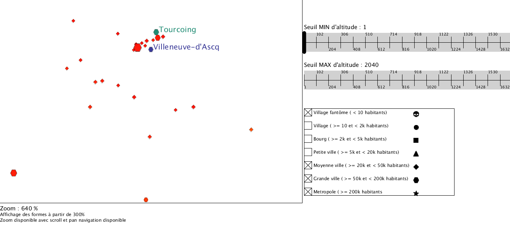

TP NIHM - Visualisation
Auteur : Barchid Sami
Description de l'application
L'application modélise les villes de France selon leur population (en nombre d'habitants) et l'altitude. Pour visualiser cela, l'application a été conçue de la manière suivante :
-
Les villes sont représentées selon leur position géographique dans un plan 2D de l'application.
-
Population de la ville : la taille de chaque ville dans l'application dépend de sa population. Plus la ville est peuplée, plus sa représentation est grande.
-
Altitude de la ville : l'altitude de chaque ville dans l'application est représentée par une variation de teinte allant du rouge (pour les altitudes faibles) au bleu (pour les altitudes hautes).
-
Classification selon population : selon une classification de l'INSEE présentée Sur ce lien Wikipedia, on peut diviser les villes françaises selon plusieurs catégories selon le nombre d'habitant de la ville. J'ai décidé de reprendre cette classification. La classification est la suivante :
-
< 10 habitants : village fantôme
- >= 10 et < 2000 habitants : village
- >= 2000 et < 5000 habitants : bourg
- >= 5000 et < 20 000 habitants : petite ville
- >= 20 000 et < 50 000 habitants : moyenne ville
- >= 50 000 et < 200 000 habitants : grande ville
- >= 200 000 habitants : métropole
Une forme différente est attribuée à chacune de ces classes. Par exemple, une ville représentée par une étoile dans l'application indique que la ville est une métropole (voir la légende détaillée sur l'image de l'application).
-
Un système de zoom (via scrolling) et de pan navigation est accessible afin de pouvoir se concentrer sur des zones. L'affichage des formes de la classification est disponible uniquement à partir d'un zoom de 300%.
-
Il est possible de filtrer les villes selon la population et l'altitude un imposant des seuils minimaux et maximaux.
-
Au passage de la souris au dessus d'une ville, celle-ci change de couleur (couleur verte) et le nom de cette ville est affiché à droite. De même si on clique sur une ville, celle-ci change de couleur (en violet) et son nom est aussi affiché à droite.
-
Il est possible de filtrer selon la classe de ville que l'on veut afficher avec un système de checkboxes.
Quelques captures d'écran montrent des utilisations de l'application :
-
Zoom + retirer les villages, bourgs et petites villes (on voit les formes car le zoom est assez fort) :

-
Seuillage avec altitude :
-
Exemple : les villages fantômes entre Reims et Nancy
Explications des choix réalisés
-
Variation de teinte pour l'altitude : la variation de teinte a pour avantage d'être sélective et associative. On reconnaît ainsi facilement les villes qui sont dans des mêmes ordres d'altitude (par exemple, les villes de montagne sont en bleu). Le désavantage est qu'une couleur n'est pas ordinale : on ne peut pas dire instinctivement que le bleu est meilleur que le rouge. En revanche, comme on a posé au début du mode d'emploi que la teinte allait du rouge au bleu, on introduit une ordinalité implicite. Le mieux autait été de faire une légende directement dans l'application. Mais, par manque de temps, cela n'a pas été fait.
-
Taille pour le nombre d'habitants : la taille de la forme d'une ville introduit le nombre d'habitants qu'elle possède. La taille possède plusieurs caractéristiques de variable rétinienne qui nous intéresse ici : elle est associative (on peut identifier les villes qui ont le même ordre de taille), ordinale (on voit les villes plus grandes que les autres), etc. Il a également été ajouté une variante alpha selon l'importance de la population de la ville. En effet, le problème d'une ville très peuplée est qu'elle est représentée en très grand, ce qui occulte les villes plus petites alentours. Rajouter un alpha permet de rendre les très grandes villes transparentes pour que l'on puisse voir les petites villes qui seraient occultées dans notre représentation. Par exemple, grâce à ce alpha sur les grandes villes, on peut voir les petites villes autour de Paris, qui est très peuplé.
-
Forme pour la classification : on construit une autre information sur la population des villes : la classification selon l'INSEE, que l'on représente avec des formes. L'usage de forme est utile pour notre tâche de classification car on utilise la propriété d'associativité des formes. En effet, en utilisant des formes élémentaires, on est capable de rapidement reconnaître une classe de ville par rapport à l'autre. Néanmoins, lorsque l'on regarde la carte des villes sans zoom, les villes sont trop denses pour que l'on soit capable de reconnaître les formes distinctement. C'est pourquoi une contrainte d'un zoom minimum de 300% a été imposé sur l'affichage des formes, car à partir de ce zoom, on est capable de reconnaître les formes distinctement.
Une critique qui peut être fournie sur les formes est que l'on peut avoir un problème d'interprétation de la taille suivant la forme utilisée. En effet, il se pourrait qu'on ait du mal à distinguer si une étoile est plus grande qu'un cercle sans se concentrer quelques instants sur la comparaison, étant donné que l'étoile est une forme plus "subtile" que le cercle. On introduirait alors un soucis de "perspective". Toutefois, il a été constaté que cela n'était pas tellement dérangeant.
-
Zoom et pan navigation : comme il a été dit précédemment, dû à la quantité d'informations présentes au départ, il est bien plus aisé de manipuler les données présentées par la carte si on peut zoomer et naviguer sur celle-ci.
-
Filtrage par seuil min et max : pour filtrer les villes selon les données utilisées, on peut utiliser des filtres min et max pour l'altitude et la population. Ces filtres sont utiles pour obtenir directement les villes selon une tranche de population, etc. Une amélioration aurait été de réaliser un histogramme interactif afin que l'utilisateur puisse voir la quantité de ville filtrées par son seuil.
-
Filtrage par classe : L'introduction d'une classification implique logiquement un filtrage selon les classes de villes définies. Le filtre utilisé est réalisé au moyen de checkboxes à cocher si on veut visualiser les villes de la classe recherchée. Cette méthode est utile si on voudrait, par exemple, visualiser tous les villages fantômes de France sans devoir essayer d'adapter les filtres par seuils à l'unité près. Un autre avantage de l'utilisation de checkboxes est que celles-ci peuvent s'insérer facilement dans une légende pour la rendre interactive sans gêner la compréhension.
Inspirations
Les pages suivantes m'ont aidée dans la réalisation de mon TP :